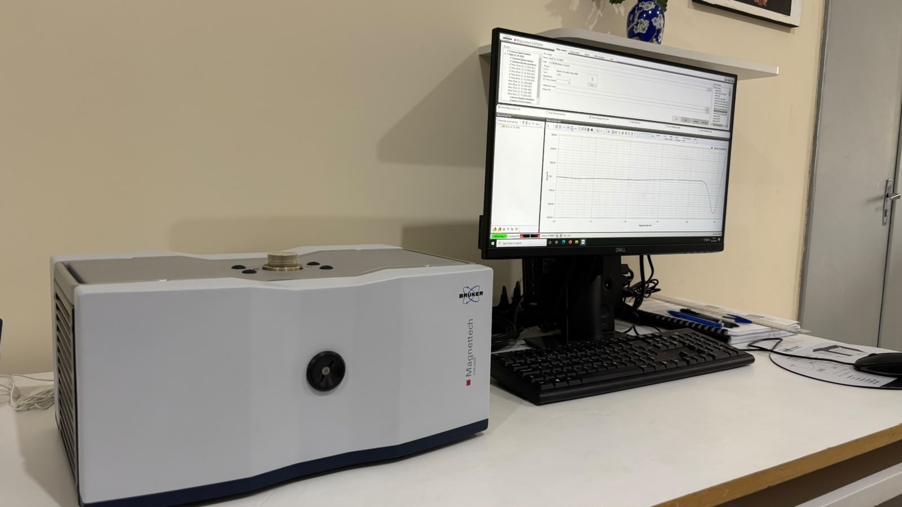

LDRD
Laboratório de Dosimetria Retrospectiva e Datação
Datação por TL, OSL e EPR, dosimetria retrospectiva e caracterização de materiais arqueométricos, geológicos e geomorfológicos.
Site do LDRDInício / CIDIN
CIDIN
Laboratórios, equipamentos e equipe do Departamento de Energia Nuclear da UFPE abertos a pesquisadores de dentro e de fora da universidade, para irradiação gama, datação, dosimetria e caracterização de materiais.


Técnicas disponíveis e as áreas de pesquisa em que já são usadas. Escolha a técnica para ver o laboratório e os equipamentos.
| Técnica e laboratório | Ciência dos materiais | Arqueometria e patrimônio | Geologia e ambiente | Saúde e biologia | Indústria |
|---|---|---|---|---|---|
| Irradiação gama de altas taxas de doseGAMALAB. Irradiador Gamma Cell, fonte de Co-60 | sim | sim | sim | sim | sim |
| Datação por termoluminescência e OSLLDRD. Leitoras Harshaw 3500, Lumideteck 3000 e Lexyg Smart | sim | sim | sim | sim | não |
| Datação e dosimetria por EPRLDRD. Ressonância paramagnética eletrônica | sim | sim | sim | sim | não |
| Fluorescência de raios XLDRD. µXRF ARTAX e ProSpector LE portátil | sim | sim | sim | não | sim |
| Espectrometria gama de alta resoluçãoLDRD. Detector HPGe Canberra | não | sim | sim | não | sim |
O LPN ainda não tem técnicas e equipamentos confirmados; entram aqui quando forem informados.
Cada laboratório tem coordenação, regras de uso e agenda próprias.

Laboratório de Dosimetria Retrospectiva e Datação
Datação por TL, OSL e EPR, dosimetria retrospectiva e caracterização de materiais arqueométricos, geológicos e geomorfológicos.
Site do LDRD
Laboratório de Irradiação Gama de Altas Taxas de Dose
Irradiação de amostras de até 1 litro com Co-60, para ciência dos materiais, nanotecnologia, farmacologia e ciências biológicas e da saúde.
Página do GAMALABPesquisa multiusuária
Infraestrutura de pesquisa compartilhada do CIDIN. Nome por extenso, equipamentos e responsável em confirmação.
Página do LPNO acesso segue os procedimentos de solicitação, autorização, agendamento e segurança de cada laboratório.
Ver as etapas e solicitarO CIDIN é coordenado pela Profa. Dra. Viviane Khoury Asfora, com vice-coordenação do Prof. Dr. Vinicius Saito Monteiro de Barros.
Equipe e governançaFortalecer a capacidade científica e tecnológica da UFPE, com uso eficiente e seguro da infraestrutura, colaboração entre instituições e formação de pesquisadores em dosimetria e instrumentação nuclear.